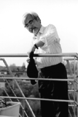
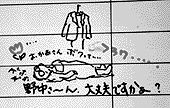
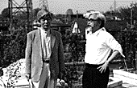

96.4.01（月）
朝10時半より入社式が行われる。徳間康快社長、山下辰巳副社長も出席する。制作のアルバイトの東大生S君は、出勤時間を1時間間違え11時に出社。大物か。
テレコム竹内氏来社。田中敦子氏は5月1日からジブリに出向。一応６カ月間10月末日までの予定。ただし、同席した宮崎監督は「延びるよ」と一言。
ディダラボッチの35ミリテストラッシュが行われる。デジタル合成用のテストラッシュは、奥井さんがイマジカで見てリテークを出したため延期。
96.4.02（火）
編集の瀬山さん来社。「もののけ姫」の編集作業をあらためてお願いする。
96.4.03（水）
セル穴の問題は機械の刃を取り換えることで解決。
宮崎監督が「たまには安藤にまともな食い物を食わせよう」ということで、メインスタッフ８人を食事に連れていく。
96.4.04（木）
「人間は何を食べてきたか・ニジェール川の移動漁民」を観る会が行われる。事前に宮崎監督が強制的とも思える参加お願いポスターを貼った為、新人を含め20人以上の参加者があった。
96.4.06（土）
バーにて新人歓迎会が行われる。ガイナックスの庵野氏も飛び入り参加。
96.4.10（水）
朝、宮崎監督がなかなか来ないと思ったら、自宅近くの桜の木を見物してから出社してきたらしい。
96.4.12（金）
最近鈴木プロデューサーがやけに機嫌がいいと思ったら、いつのまにか中日が首位に立っている。ちなみに鈴木さんは、開幕日には「俺はドジャースにしか興味はない」と語っていた。
96.4.13（土）
ラッシュチェックが行われる。リテーク多数あり。
ブエナ・ビスタに渡す絵コンテのコピーを例のS君にとらせていたら「コピーばっかりでもうやってられません。もうやめます」と帰っていった。あきれるばかりの忍耐力の無さである。さすがの私も呆れてしまった。
96.4.15（月）
朝からS君の話題でもちきりである。鈴木プロデューサーは、予想通り「辞めたのは田中がいじめたからだ」といいふらしていた。
96.4.16（火）
三原さんの打ち合わせ。CUT827～854、857、864、866の計32カット。
96.4.17（水）
宮崎監督の風邪が悪化。タバコも吸えないほど苦しそう。
某原画マン（29歳・男）がうまく原画が描けないイライラから、トイレのドアを殴打、ドアが見事にへこんでしまう。本人は「明日総務の古林さんに謝ります」と反省しきり。
96.4.18（木）
宮崎監督が「神経症で不眠症になってしまった」と朝9時50分に出社。
日本テレビの新入社員50名（！）が研修でジブリを見学。鈴木プロデューサー、野中さんの講義のあと15、6人一組となって、川端、田中、野中の三人が社内を案内する。
7時半より会議室にて第二回「人間は何を食べてきたか」を観る会が開催される。今回のテーマはソーセージ。宮崎監督が、ジブリのグルメ王、総務の一村教授が推薦する、武蔵境のマイスタームラカミのソーセージを1万円分、野崎さんがチーズ、篠原さんがフランスパンをそれぞれ会のためにカンパ。食べ物に釣られてか大盛況。
96.4.20（土）
ラッシュチェックが行われる。
宮崎監督がラストまでのおおまかな流れをまとめたので、メインスタッフを会議室に集め、今後のストーリーと全体の感じを伝える。
96.4.22（月）
アシタカが腕に巻き付いたタタリ神を振り払うカットが、本来はタタリ神を一コマで描かれなければならないのに、二コマで描かれていたことが発覚。結局間を割って一コマに描きなおし。
96.4.23（火）
演助の新人研修生石曽根君が研修の一環として制作部にくる。朝から早速絵コンテコピーをやってもらうが、それを見た宮崎監督は「田中の新人いじめだ」と社内にふれまわっていた。
屋上に作った庭の芝生が烏によってひっくり返される事件が多発し、対策が待ち望まれていたが、ついにCG部片塰さんの見つけた烏撃退用の烏人形が屋上に設置される。結果は果たして。

稲村氏打ち合わせ。 858～863,865,867～872まで14カット。
午後より石井君が，CG部でデジタルペイントの初仕事。
鈴木、大森、奥田の中年トリオが、夜の11時すぎに風邪で休んでいる制作業務の野中さんを見舞うと称して、部屋を覗きに行く。

96.4.25（木）
筑紫哲也氏がニュース23の収録のため来社、屋上にて宮崎監督と対談を行う。危ない発言も多数飛び出し面白い対談となる。テレビマンユニオンの取材も入っていたので、これ幸いにと、写真を撮りまくる。スタジオにはけっこう筑紫ファンが多いらしく、写真を譲ってくれとの依頼多数。

96.4.29（月）
宮崎監督が朝から鍼へ行く。最近回数がかなり多くなったと思うのだが …。
96.4.30（火）
明日から出社するテレコム田中敦子さんの絵コンテを宮崎監督が夜1時までかかって完成させる。CUT877～934まで58カット。
| 次のページへ |
| 日誌索引へ戻る |
| 「もののけ姫」トップページへ戻る |